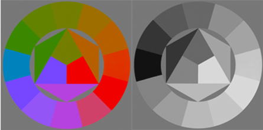

Yibing Song
宋奕兵
Senior Research Scientist
Tencent AI Lab
Email: dynamicstevenson at gmail dot com
I am looking for self-motivated
computer vision interns to
carry out top-notch research
work. Interested applicants
please contact me directly.
|
Yibing Song宋奕兵 Senior Research Scientist Email: dynamicstevenson at gmail dot com |
I am looking for self-motivated |
Yibing Song currently works for Tencent. He has obtained a PhD degree from City University of Hong Kong in 2018 and a bachelor degree from University of Science and Technology of China. During graduate study, he has interned in Adobe Research, San Jose and visited UC Merced.
Computer Vision: Visual Tracking, Face Analysis.
Outstanding Reviewer: CVPR 2018.
| 10. | Shi Pu, Yibing Song, Chao Ma, Honggang Zhang and Ming-Hsuan Yang,
Deep Attentive Tracking via Reciprocative Learning, Conference on Neural Information Processing Systems (NIPS) 2018 [PDF|Project Page] |
|
| 9. | Jianbo Jiao, Ying Cao, Yibing Song and Rynson Lau,
Look Deeper into Depth: Monocular Depth Estimation with Semantic Booster and Attention-Driven Loss, European Conference on Computer Vision (ECCV) 2018 [PDF] |
|
| 8. |  |
Yibing Song, Chao Ma, Xiaohe Wu, Lijun Gong, Linchao Bao, Wangmeng Zuo, Chunhua Shen, Rynson Lau and Ming-Hsuan Yang,
VITAL: VIsual Tracking via Adversarial Learning, IEEE Conference on Computer Vision and Pattern Recognition (CVPR) 2018 (Spotlight) [PDF|Project Page] |
| 7. | Jiawei Zhang, Jinshan Pan, Jimmy Ren, Yibing Song, Linchao Bao, Rynson Lau and Ming-Hsuan Yang,
Dynamic Scene Deblurring using Spatially Variant Recurrent Neural Networks, IEEE Conference on Computer Vision and Pattern Recognition (CVPR) 2018 (Spotlight) [PDF] |
|
| 6. | Xin Yang, Ke Xu, Yibing Song, Qiang Zhang, Xiaopeng Wei and Rynson Lau,
Image Correction via Deep Reciprocating HDR Transformation, IEEE Conference on Computer Vision and Pattern Recognition (CVPR) 2018 [PDF|Project Page] |
|
| 5. | Yibing Song, Chao Ma, Lijun Gong, Jiawei Zhang, Rynson Lau and Ming-Hsuan Yang,
CREST: Convolutional Residual Learning for Visual Tracking, IEEE International Conference on Computer Vision (ICCV) 2017 [PDF|Project Page|Media Report (in Chinese)] |
|
| 4. | Yibing Song, Jiawei Zhang, Shengfeng He, Linchao Bao and Qingxiong Yang,
Learning to Hallucinate Face Images via Component Generation and Enhancement, International Joint Conference on Artificial Intelligence (IJCAI) 2017 [PDF|Project Page] |
|
| 3. | Yibing Song, Jiawei Zhang, Linchao Bao and Qingxiong Yang,
Fast Preprocessing for Robust Face Sketch Synthesis, International Joint Conference on Artificial Intelligence (IJCAI) 2017 [PDF|Project Page] |
|
| 2. | Yibing Song, Linchao Bao, Qingxiong Yang and Ming-Hsuan Yang,
Real-Time Exemplar-Based Face Sketch Synthesis, European Conference on Computer Vision (ECCV) 2014 [PDF|Project Page] |
|
| 1. |  | Yibing Song, Linchao Bao, Xiaobin Xu and Qingxiong Yang,
Decolorization: Is rgb2gray() Out? ACM SIGGRAPH ASIA Technical Briefs 2013 [PDF|Project Page] |